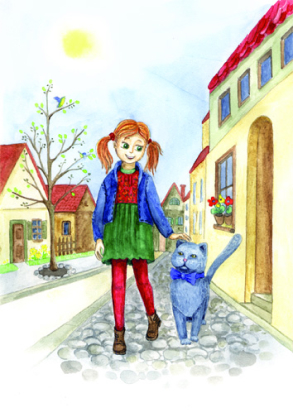
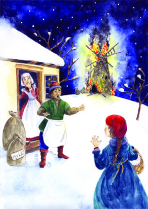
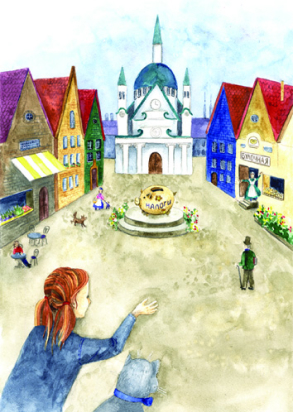

Сказка “Кот и Сливки”

Пришла весна. Звонко пели птицы, листочки с каждым днем становились зеленее, а трава — ярче. Лиля вышла на крыльцо погреться и, щурясь на солнце, наблюдала, как природа просыпается от зимнего сна. Ласковый ветерок принес соблазнительный запах свежей выпечки.
— М-м-м… Это пончики с корицей тетушки Ани, — подумала Лиля и направилась в самую известную в городе булочную.
По дороге девочка встретила большого кота благородной британской породы. Из-за своей плотной шерстки он был похож на маленького плюшевого медвежонка. Кот тихо мяукнул, потерся о ногу Лили, и девочка поняла, что он хочет подружиться.
По дороге девочка встретила большого кота благородной британской породы. Из-за своей плотной шерстки он был похож на маленького плюшевого медвежонка. Кот тихо мяукнул, потерся о ногу Лили, и девочка поняла, что он хочет подружиться.
— В булочную идешь? — спросил Кот.
— Да, иду к тетушке Ане. Она печет такие вкусные пышные пончики, мягкие, словно пуховая перина! Пойдешь со мной?
— Я так сразу согласиться не могу. Я же кот и гуляю сам по себе! И вообще, ты что, не знаешь, что коты не едят пончики?
— Но ты ведь не откажешься от сливок? — нашлась Лиля.
— Сливки — это хорошо, — облизнулся Кот. — А тетушка Аня не жадная? С чего это она меня сливками будет угощать?

— Тетушка Аня щедрая, она всех угощает.
— А она любит скромных породистых котов? И будет называть меня «сэр»?
— Сэр! Я не успеваю вставить слово! — рассмеялась девочка и смешно сморщила нос. Луч солнца коснулся ее рыжих волос.
— Ты похожа на подсолнух. У тебя волосы как солнце, — заметил Кот.
— Какой ты болтливый! — вздохнула Лиля.
— Но ты ведь не развлекаешь меня разговорами! — грустно вздохнул Кот.
— Ладно, пожалуй, расскажу тебе одну историю…
Тетушка Аня появилась в наших местах очень давно. У нее был скверный характер: она не любила детей, все время бурчала и не подкармливала бездомных животных. Жила тетушка в большом темном доме с закрытыми ставнями.
Тетушка Аня появилась в наших местах очень давно. У нее был скверный характер: она не любила детей, все время бурчала и не подкармливала бездомных животных. Жила тетушка в большом темном доме с закрытыми ставнями. Она ни с кем не дружила и все праздники встречала одна-одинешенька. Единственная радость в жизни тетушки Ани была печь пироги. Они у нее всегда получались ароматными и вкусными. Для теста нужна была мука, и тетушка Аня часто ходила на мельницу.
Однажды под Рождество, когда в воздухе кружились красивые снежинки, а под ногами хрустел снег, тетушка Аня задумала испечь имбирные пряники. Когда она стала месить тесто, вдруг увидела в окне зарево. Вдалеке что-то ярко горело, освещая темное небо. Удивилась тетушка Аня, но спросить о том, что происходит, было не у кого — она ведь ни с кем не общалась.
 С утра пораньше отправилась тетушка на мельницу купить муки. При-шла и увидела вместо мельницы пепелище. Вокруг собрались жители деревни, а на снегу сидел мельник и горько плакал:
— Сгорела моя мельница! Теперь муку придется из соседней деревни возить! И ведь никто не помог мне пожар тушить! А все потому, что не дружим мы между собой!
Местные жители пожалели мельника и решили помочь ему построить новую мельницу. Кто-то дал серебряные монеты, кто-то привез бревна, а тетушка Аня решила всех накормить пряниками. Вскоре в деревне стояла новая мельница. Она получилась еще лучше прежней.
Рождество жители деревни встречали вместе. Они вынесли на улицу столы, нарядили елку и весь вечер веселились. С тех пор все подружились, стали здороваться, ходить друг к другу в гости и дарить подарки.
А тетушка Аня открыла булочную, чтобы угощать соседей свежими булочками. Если получалось выручить денег больше, чем рассчитывала, откладывала часть в копилку, как она говорила — «на налоги», чтобы потратить на добрые дела.
Соседи стали брать пример с тетушки Ани. Они каждый месяц приноси-ли часть своих доходов в общую копилку, и когда денег стало много, решили на них украсить деревню.
Постепенно в деревне появились новые лавочки, часовая мастерская и кафе-мороженое. Жители разбогатели и стали класть в общую копилку больше налогов. Вскоре деревня превратилась в чудесный городок. Он был таким живописным, что полюбоваться на красные черепичные крыши и цветные стены домов приезжали жители соседних местечек.
…Лиля и Кот не заметили, как дошли до булочной, из которой доносились ароматы корицы и ванили. Тетушка Аня встретила гостей у порога и стала угощать Лилю пончиками, а Кота — его любимыми сливками. — Я тоже буду платить налоги! — мурлыкнул довольный Кот. — Может, они пойдут на фарфоровые блюдца, из которых будут кормить сливками благородных котов!